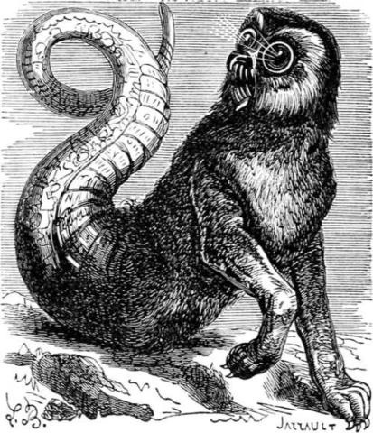
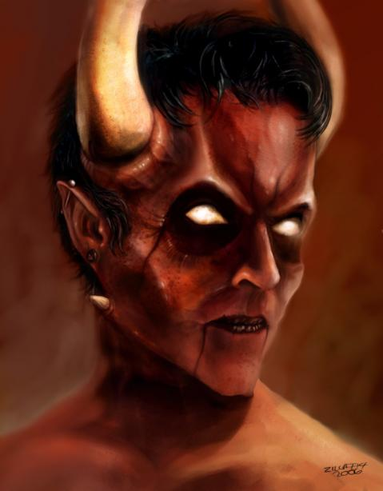

¿Quienes Somos?
Somos la peor calaña, los llamados diablos. Amplios amantes de los viajes infernales con AC/DC, Slayer, Motorhead, Mamá Ladilla entre otros muchos grupos musicales. Por lo que si tu interes es cojer un avión y pegarte un viaje por toda la eternidad este es tu sitio web. Disponemos de distintos destinos infernales independientemente de tu religión, color, o cultura. Podeis encontrarnos en cualquier parte, solo necesitais pecar y nosotros nos pondremos en contacto.
Nuestra sede oficial se encuentra en el interiro del Pozo de Darvaza
Nuestro personal:
Aamon
Amon, también escrito Aamon, en demonología es un marqués del infierno que comanda cuarenta legiones de demonios. Él cuenta las cosas del pasado y del futuro. Es uno de los ayudantes de Astaroth y uno de los tres demonios al servicio de Satanachia, siendo uno de los más firmes de los demonios principales. Su nombre significa riqueza, induciendo a la avaricia.

Asmodeus
Asmodeo Asmodai, bajo de Agus, Sydonai, Chammadai o Asmodeus es un demonio conocido comúnmente por aparecer en el Libro de Tobit o Libro de Tobías, que no forma parte del Antiguo Testamento protestante ni del judío, pero sí del canon católico. También es mencionado en el Talmud y en los tratados de demonología. Su origen se halla en la religión mazdeísta (Zoroastrismo) de los persas. Probablemente, llega al judaísmo durante el tiempo en el que este pueblo se halló bajo la dominación persa (s. VI a.C) y más tarde, parece que hacia el siglo II, pasaría al cristianismo.

Belcebú
Se cree que Belcebú o Beelzebuba deriva etimológicamente de "Ba'al Zvuv" que significa "El Señor de las Moscas". Es, entre otras cosas, el señor de las tinieblas, el innombrable, el mismísimo demonio. Por otro lado, era usado por los hebreos como una forma de burla hacia los adoradores de Baal, debido a que en sus templos, la carne de los sacrificios se dejaba pudrir, por lo que estos lugares estaban infestados de moscas.

Belphegor
Belfegor, también escrito Belphegor y Balphegor, (hebreo: בַּעַל-פְּעוֹר baʿal-pəʿōr - Señor, o Baal, de Pe'or, o de la apertura) es el nombre de un demonio de la tradición judía y cristiana. Originalmente es el nombre usado en la Septuaginta (Βεελφεγώρ) y luego en la Vulgata (Beelphegor) para el dios moabita Baal Pe'or. Más tarde fue asignado a un demonio, como tal, Belfegor forma parte de la mitología cristiana y se convirtió en un personaje de la literatura renacentista y la cultura popular moderna.

Leviathán
La descripción de “Leviatán” que encontramos en Job 41:1-34 encaja perfectamente con el cocodrilo, y el “mar” del versículo 31 puede referirse a un río, como el Nilo, o a otra masa de agua dulce. No obstante, hay que tener en cuenta que a algunos cocodrilos, como los cocodrilos del Nilo (Crocodylus niloticus), se les ha hallado a lo largo de la costa, y que en algunas ocasiones se adentran en el mar, a cierta distancia de la tierra. “Perspicacia para comprender las Escrituras” editada por Watchtower Bible and Tract Society.
Mammón
En la Biblia, Mammón se personifica como símbolo de las riquezas en Lucas,3 y Mateo.4 En algunas traducciones aparece como Mammón, pero en otras se traduce como «abundancia deshonesta» o similar, dando así a entender que lo que quiso decir Jesús fue que no se puede servir a Dios y a las riquezas, en el sentido de estar esclavizado por el amor al dinero.
Lucifer
La primera vez que se cita el nombre de Lucifer es en un texto del profeta Isaías (Is 14.12-14) de la Vulgata de San Jerónimo (siglo V), traducción que él hace de la Biblia, del griego (Nuevo Testamento) y hebreo (Antiguo Testamento) al latín, para designar a la palabra Lucero. En este texto se vislumbra el antiguo relato del ángel caído:
Español:
"¡Cómo has caído del cielo, Lucero, hijo de la Aurora! Has sido abatido a la tierra dominador de naciones! Tú decías en tu corazón: "escalaré los cielos; elevaré mi trono por encima de las estrellas de Dios; me sentaré en el monte de la divina asamblea, en el confín del septentrión escalaré las cimas de las nubes, seré semejante al Altísimo"
Latín:
"Quomodo cecidisti de caelo, lucifer, fili aurorae?! Deiectus es in terram, qui deiciebas gentes!, qui dicebas in corde tuo: 'In caelum conscendam, super astra Dei exaltabo solium meum, sedebo in monte conventus in lateribus aquilonis; ascendam super altitudinem nubium, similis ero Altissimo'".